A seven-acre family farm up-island on Martha's Vineyard. Tended slowly, since 1999.
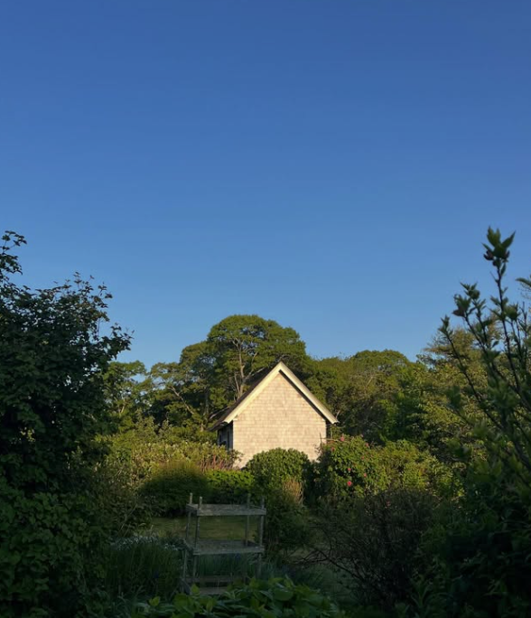
Perched on the western edge of Martha's Vineyard, the land slopes from the road down toward Menemsha Pond. Pasture, orchard, hen house, hives — all of it within a slow walk.
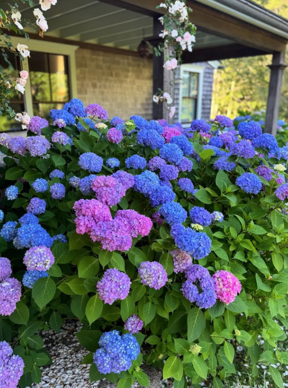
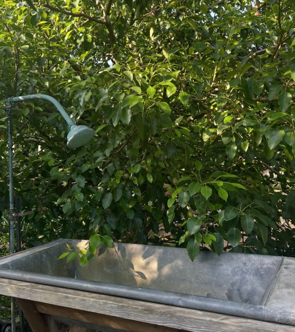
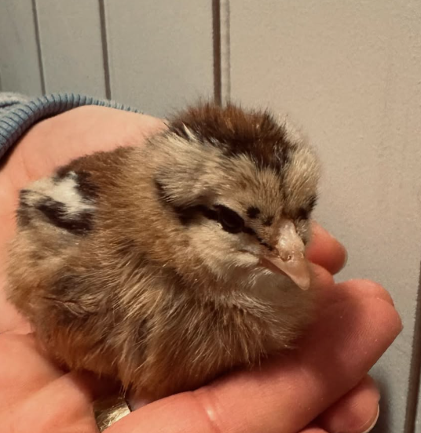
Three generations have worked these seven acres. The orchard rows are Joe's hands; the flock and the hives followed. His daughter and son-in-law work alongside him now, and a fourth generation is on the way.
We grow stone fruits — peaches and nectarines — alongside heirloom apples, cultivated honey, pasture-raised eggs, and cut flowers including our beautiful and famous tulips. Everything goes to market.
The work is quiet, mostly, and constant, and beautiful.
— A note from the family
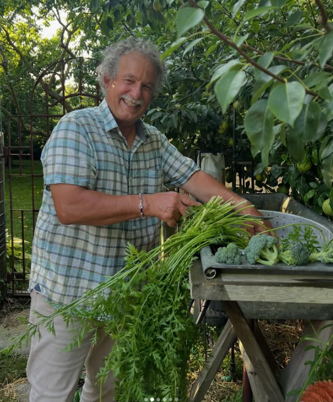
Cut at dawn, on the table by ten. Our beautiful and famous tulips lead the spring; cosmos, dahlia, and the wild meadow blooms carry the table through summer and fall.
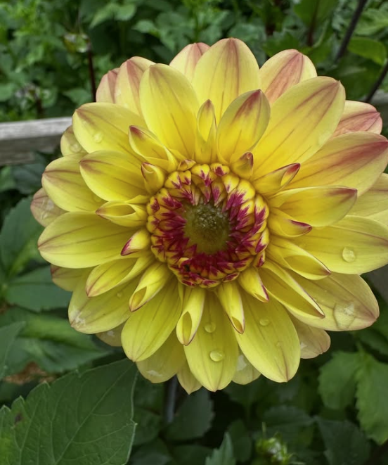
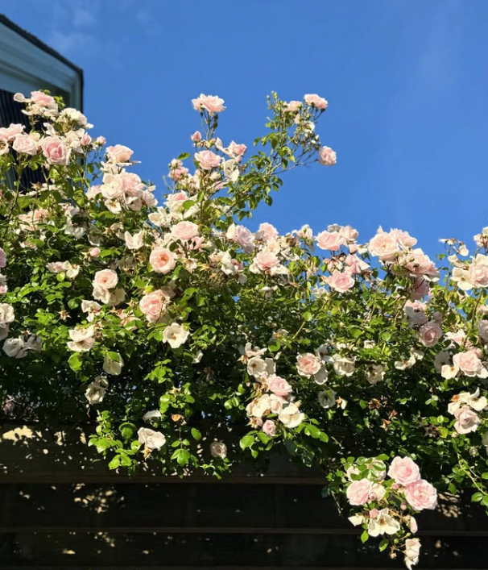
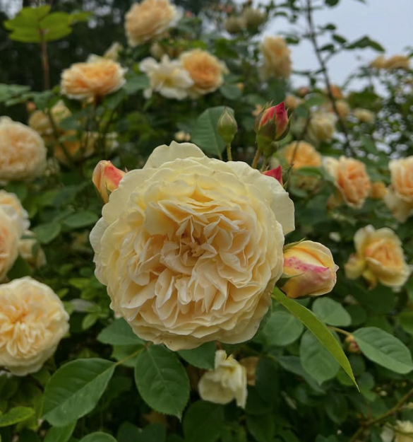
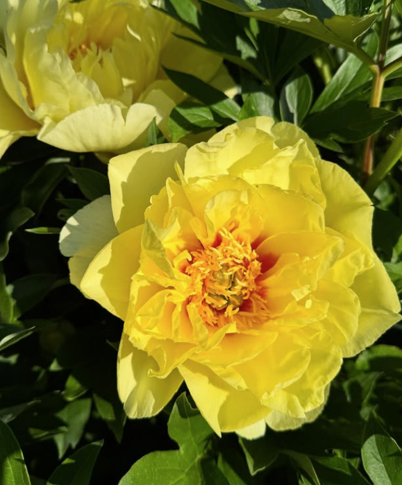
A working calendar. What's at market is what's fresh in season.
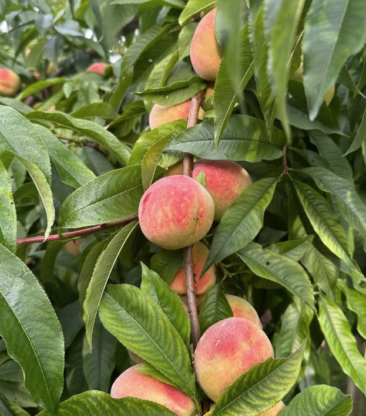
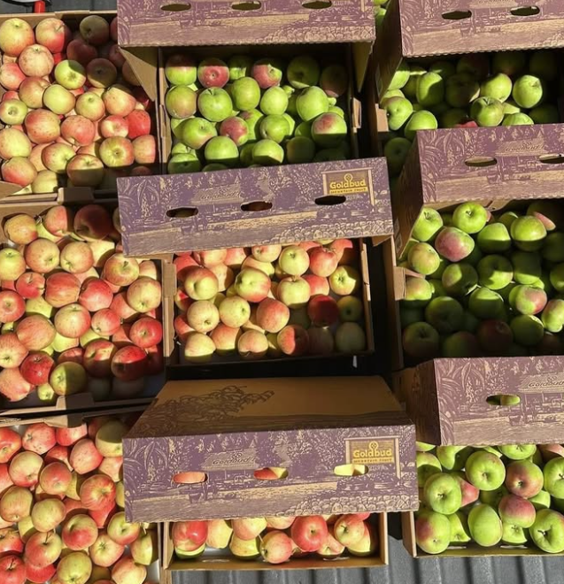
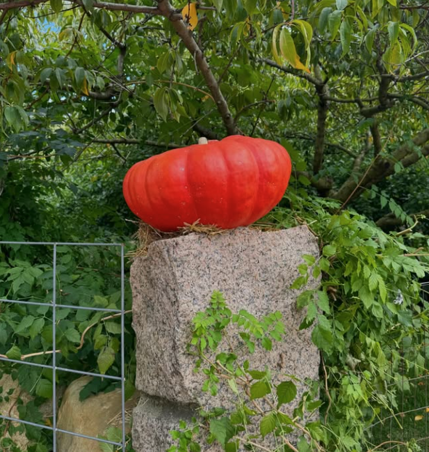
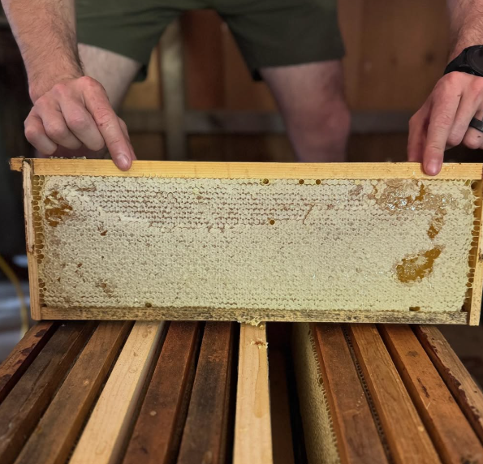
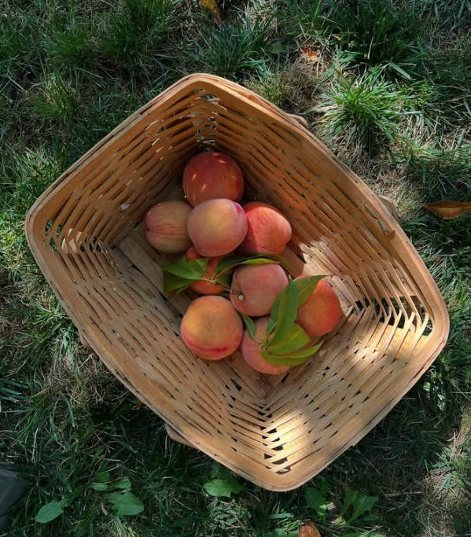
Markets shift, harvests change, and the best way to know what we're picking — and where we'll be — is to follow along.
Joe carried a berry from the bush by the house and a piece of moss from an old oak to a local paint shop. Both colors were matched by eye — and you can find them dotted throughout the farm.